aṟaiyaṇinallūr
- Identifier: NA12
- Modern Name (NIC):
- Modern Name (M.I.): aṟakaṇṭa nallūr
- Modern Name (Govt Press): arakaṇṭanallūr
- Modern Name:
- Modern District & Taluk: viḻuppuram DT (tirukkōyilūr TK or uḷuntūr pēṭṭai TK)
- Old administrative location: South Arcot DT (Tricalore TK)
- Nearby town: Tirukkōyilūr
- Railway station: Tirukkōyilūr (// Tirukkōvalūr) (SE 1km)
- Longit. 79 deg. 13'; Latit. 11 deg. 58' [NA12]
- C.D.Maclean-3: entry: TRICALORE, p. 923, col. 2,
[??Arcandalore (in Places of archaeological interest)]
- Location: according to PK: Naṭu Nāṭu (NA12)
- Name inside hymns:
- Name inside PK: aṟai aṇi nallūr
- Rank inside third volume of PIFI: 14
- Rank inside Civastala Mañcari: 14
- Rank on PY576 map: 53
- Total number of patikam-s: 1
- Campantar: 1 patikam
Note (VMS): this shrine is now known as Aṟaikaṇṭanallūr
26 pictures taken on 1998 August 22nd (Saturday afternoon)


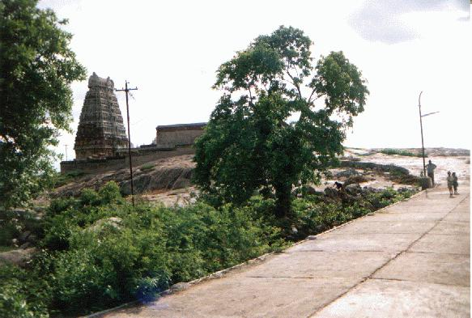
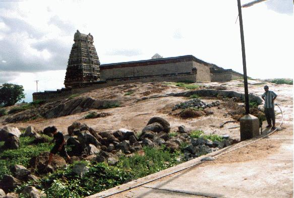

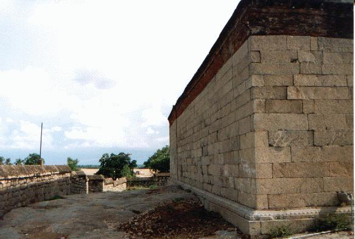


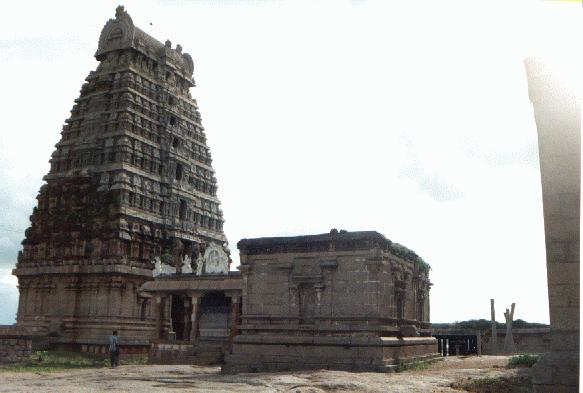
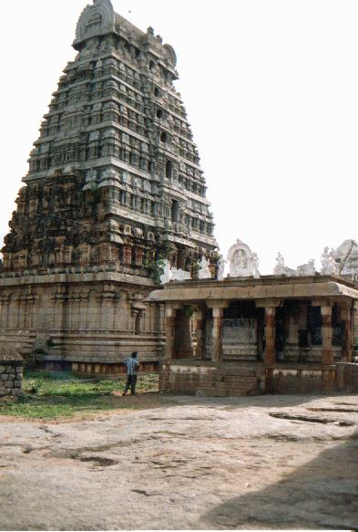


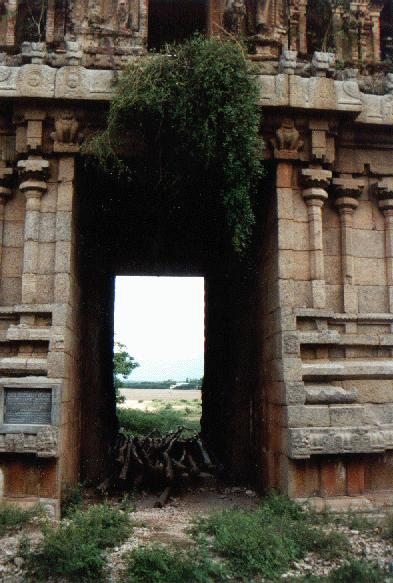

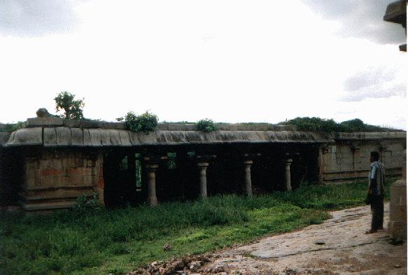
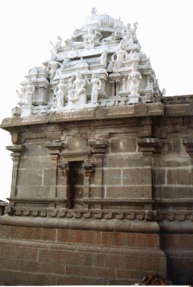


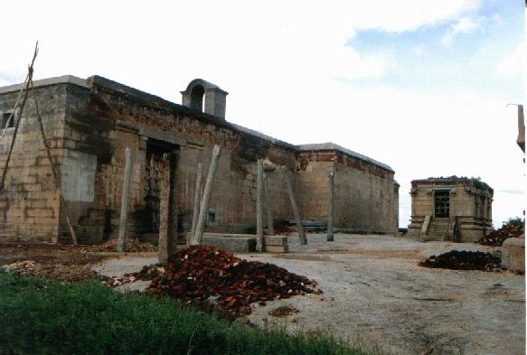


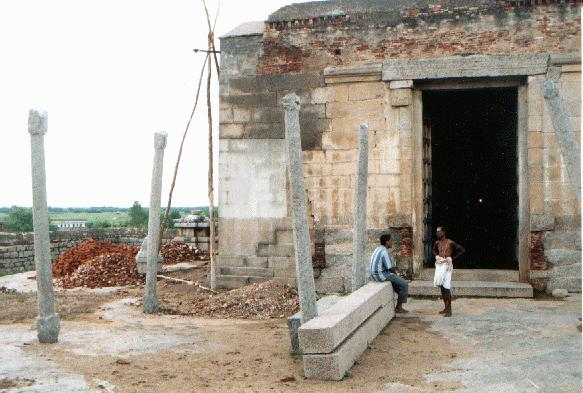
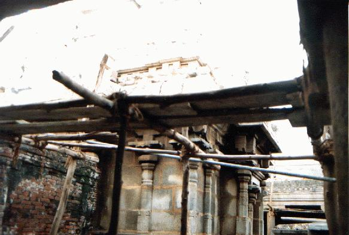
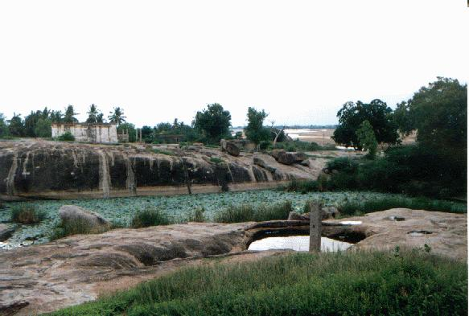
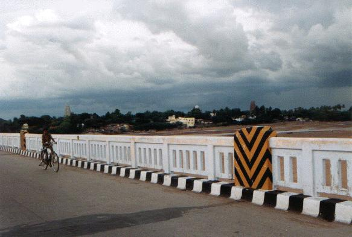

- Patikam 2_77